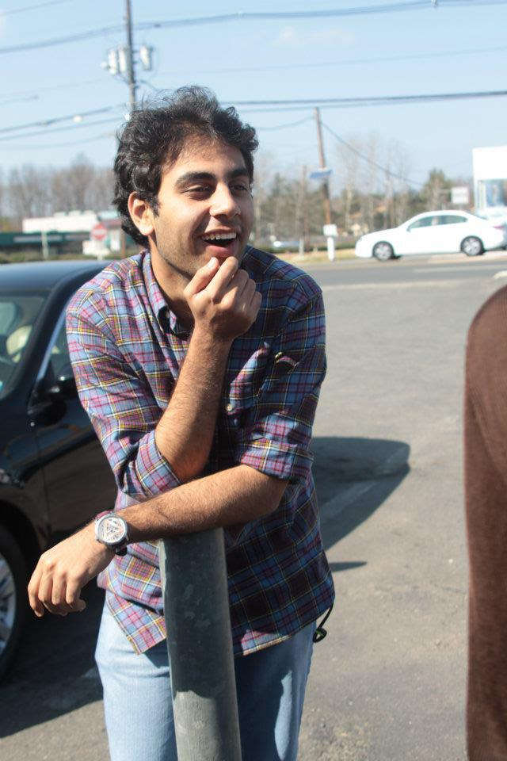

Everything about me. Well it's a start.

This is where I try to integrate my online presence into one place.
I am currently a Junior at Princeton University studying Electrical Engineering with the Applied Computation and Physics certificates. I love startups and entrepreneurship and work actively with the Entrepreneurship Club at Princeton. I'm passionate about algorithms and python list comprehensions and have worked as a developer for companies, most recently as a technolody for development consulatant with UNICEF Madagascar. In my spare time I like playing the guitar and trying my hand at programming challenges.
This summer I worked at UNICEF in Madagascar. It was an amazing experience and I tried to keep a blog about my time there. You can find it here. madsummer.wordpress.com It makes for an interesting read now that I look back at it. If you ever get the chance, visit the country. It truly is one of a kind.